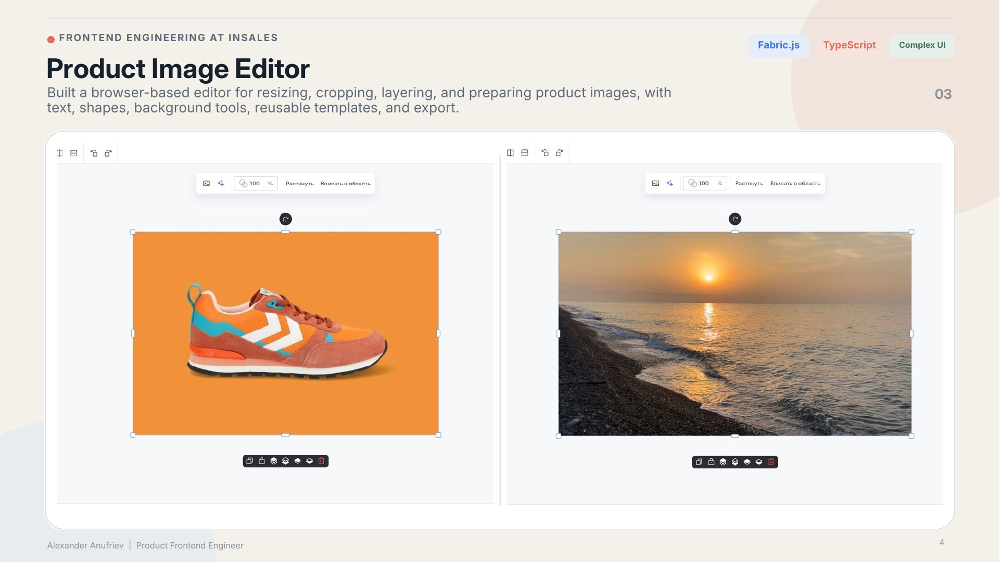
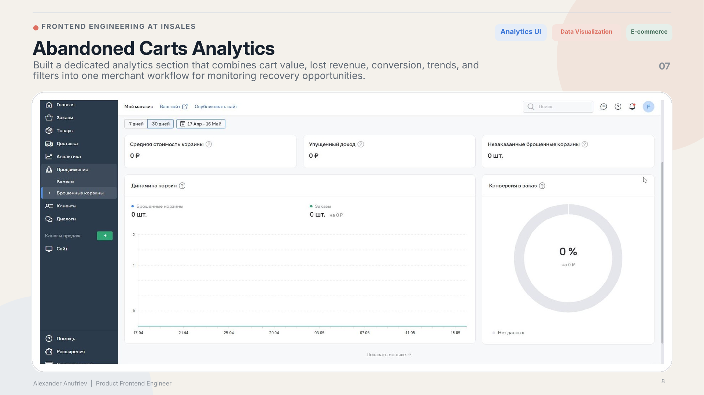
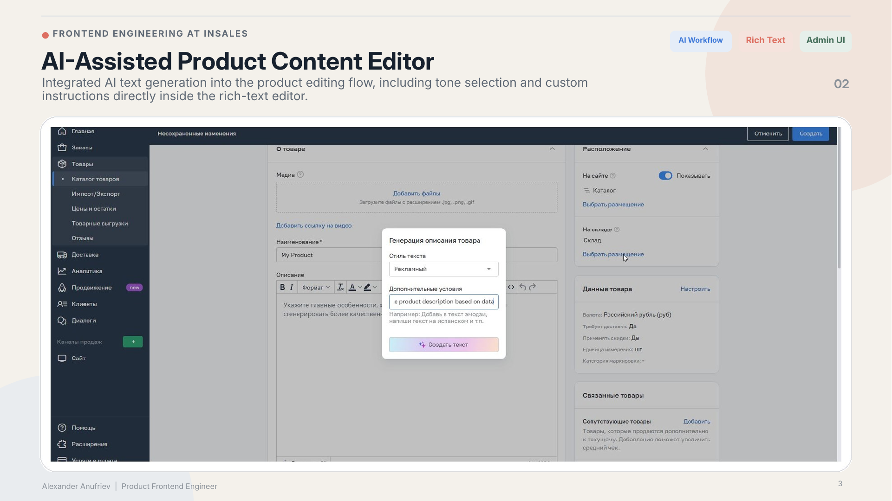
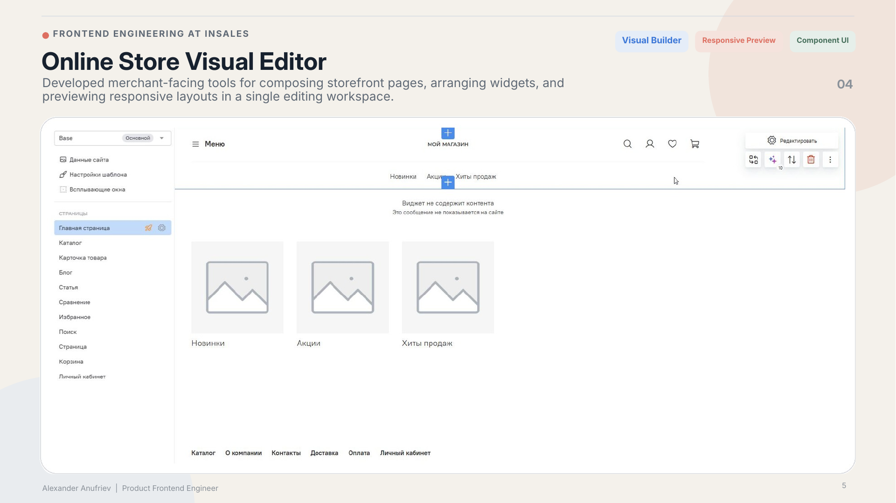

Selected work · 2021 to 2026
Product frontend work for merchants, editors, and complex browser flows
These examples show my own frontend contribution inside cross-functional product teams. The public editor repository is separate evidence from production use at inSales.

01 · Product Image Editor
A reusable editor core used by thousands of inSales clients
I built a TypeScript and FabricJS library and integrated it into product workflows. It covers canvas state, history, crop, layers, rich text, templates, export, AI-assisted image operations, and host-product APIs.
- Shared core for back-office and theme-customizer contexts
- Jest and Playwright coverage for interaction-heavy behaviour
- Public GitHub repository, npm package, and live demo
02 · Abandoned Carts
Analytics and communication in one merchant workflow
The product is used by more than 1,000 clients. No recovered-revenue or conversion claim is made because those measurements are not available.
- 01Analytics, charts, and date selection
- 02Tables, search, filters, and pagination
- 03Cart details, products, totals, and status
- 04Communication history and message flows
- 05Feature flag, QA handoff, and production verification

03 · Commerce Workflows
Content, checkout, forms, and storefront tools
Several smaller product areas show the same kind of work: translating business rules and older platform constraints into predictable browser behaviour.

- AI-assisted product descriptions Generation, review, editing, failure states, and backend API coordination inside TinyMCE.
- Cart and checkout Product options, add-ons, one-click ordering, and multi-warehouse source selection.
- Captcha providers reCAPTCHA v2 and v3, Yandex SmartCaptcha, retries, mobile keyboards, overlays, and Safari behaviour.
- Monaco template editing Code-oriented editing and preview after WYSIWYG processing damaged HTML and Liquid templates.
04 · Modernisation and UI Foundations
Vue 3 migration and reusable Vuetify components
I participated in the production migration from Vue 2 to Vue 3. My work included rewriting infographic components with script setup, extracting editor state into composables, and preserving behaviour across product contexts.
Separately, I extended an internal Vuetify UI kit with reusable components and interaction patterns for merchant administration. This was component work, not ownership of a company-wide design system.

Contact
Hiring for complex product UI?
Send the role and product context. I can share the most relevant implementation details.